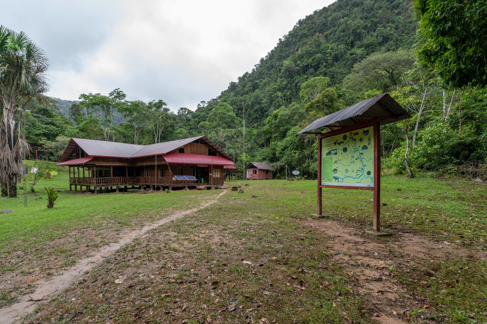
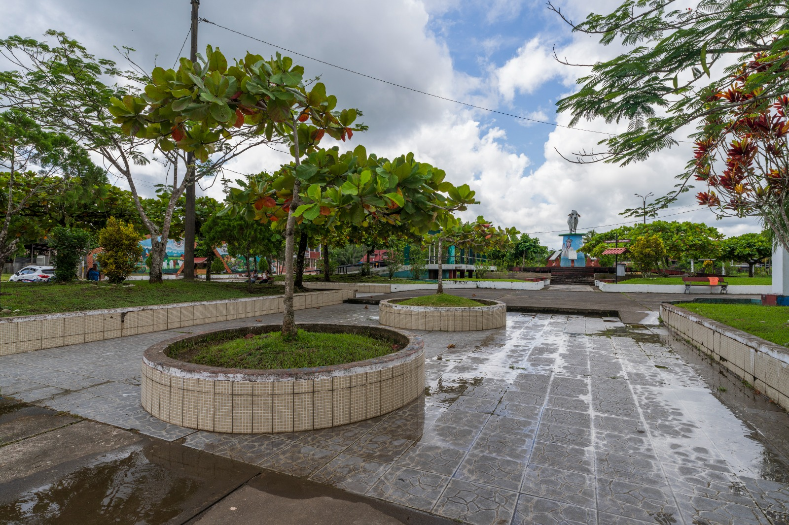
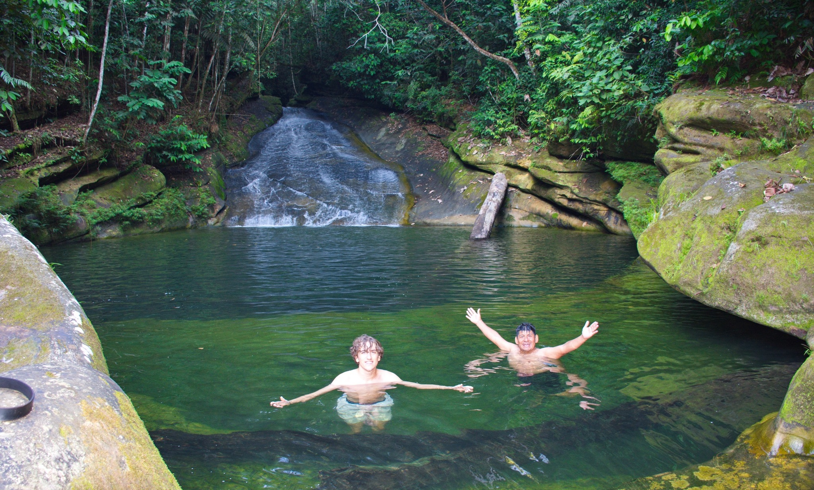

PARQUE NACIONAL
Bosque y Paujil
La puerta al parque desde Palcazú. Conoce sus accesos y prepara la visita.
Conocer el lugar ↗Praderas abiertas. Ríos entre el bosque. Un valle con raíces Yánesha y lugares que merecen tiempo.
PALCAZÚ · OXAPAMPA · PASCOElige un lugar. Podrás cambiarlo al preparar tu consulta.
Conoce el campo de Pampa Limeña, la vida de Iscozacín y los bosques que conectan el valle con Yanachaga.
Todos los lugares ↗
La puerta al parque desde Palcazú. Conoce sus accesos y prepara la visita.
Conocer el lugar ↗
La capital del distrito: plaza, murales y un punto de partida para explorar.
Conocer el lugar ↗
Un paisaje de agua y roca en Pan de Azúcar, con condiciones de visita propias.
Conocer el lugar ↗Fotografías del inventario turístico de MINCETUR. Consultar créditos ↗
El campo de Palcazú, sus praderas y el horizonte del valle. Conoce el lugar que forma parte de nuestra historia.
Palcazú tiene una historia de campo, agua y cultura viva. La presencia Yánesha, sus conocimientos del bosque y sus formas de crear son parte de esa identidad.
Acércate al lugar con curiosidad. Las visitas a comunidades y los encuentros con artesanas se acuerdan con sus anfitriones.
Conocer el valle ↗Estas ideas te ayudan a preparar una consulta. El recorrido y sus servicios se confirman para tus fechas.
Una visita centrada en el fundo, el paisaje y un ritmo cómodo para tu grupo.
Ver esta idea ↗Un recorrido que merece tiempo, preparación y coordinación de ingreso al parque.
Ver esta idea ↗Empieza por tus intereses, tus días disponibles y lo que quieres conocer.
Ver esta idea ↗Busca en toda la web o consulta nuestra guía rápida: lugares, preparación y lo que necesitas confirmar antes de viajar.